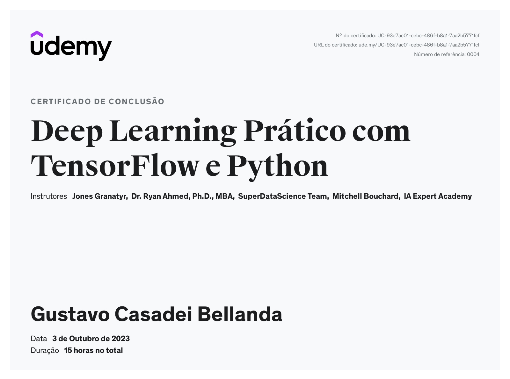
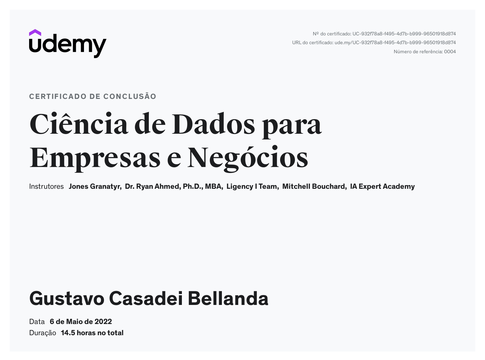
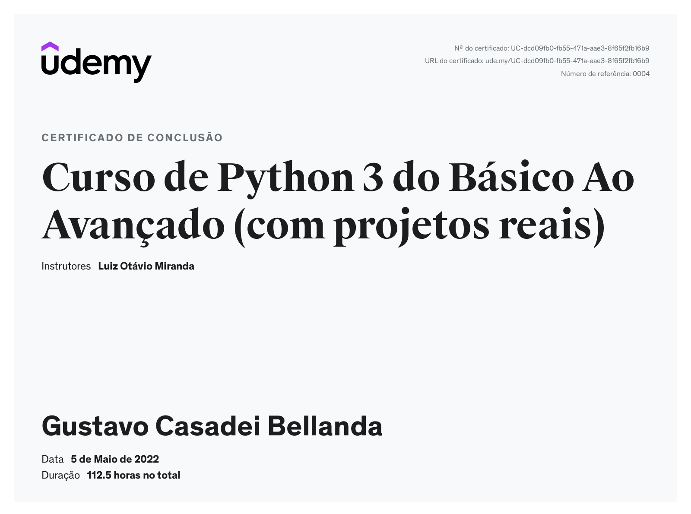
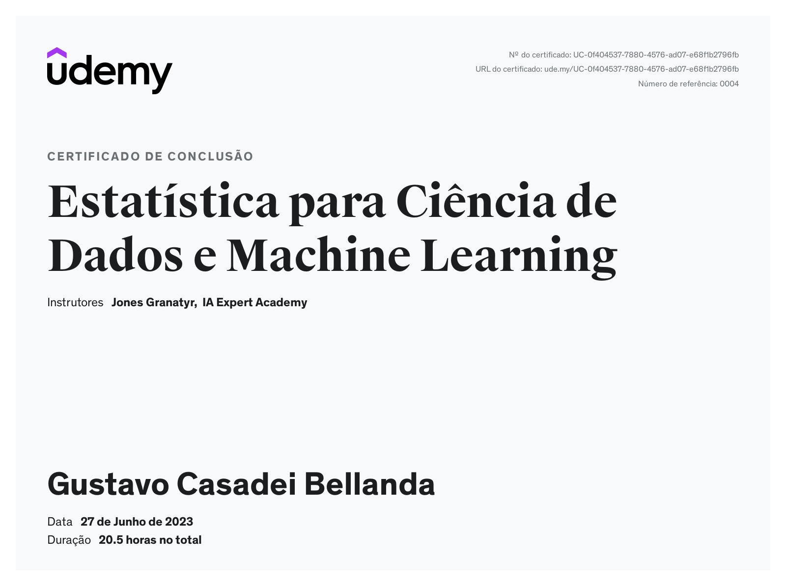
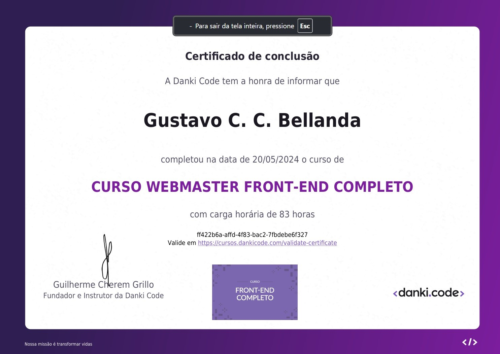
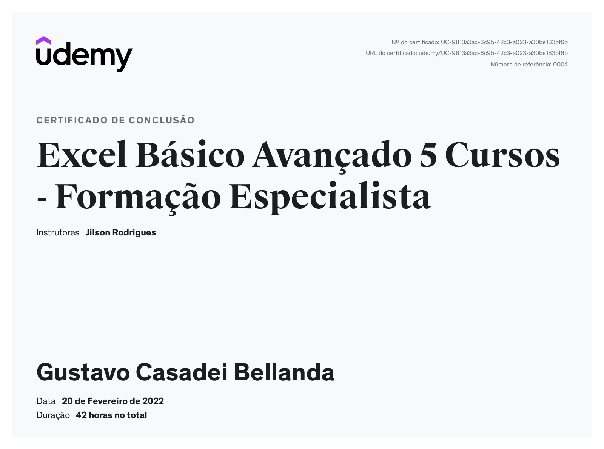

Backend & APIs
High-performance async APIs with raw SQL, but the backend isn't Python-only — Rust with Axum and Go are also in the ecosystem.

Software Architect · AI Engineer · Data Scientist
01 — About
Production Engineer by training, Software Engineer by craft. My work sits at the intersection of process engineering and modern software — quality rigor, obsession with clean architectures, and a focus on how things actually behave under real load.
Since late 2024 I've been deep in software architecture and data engineering: I built a corporate AI platform (LibreChat fork) serving 3,000+ employees at a major automaker, with custom agents, MCP, and LangChain. In parallel, I lead the technical architecture of three startups — real estate intelligence, sports event management, and vehicle sales — while designing RevOps data pipelines with Polars, DuckDB, and ML. I'm an enthusiast and heavy user of AI as an engineering tool: Cursor and Claude Code with agents, rules, skills, and sub-agents are part of my daily workflow. Perfectionist about architectures and passionate about benchmarks and high performance.
My stack is an ecosystem, not a limitation: Python with FastAPI and Granian for high-performance APIs, TypeScript with React and Tailwind for interfaces, but also Bun for pure TS when it makes sense. Rust for systems and backend (Axum), Go and Zig on the radar. PostgreSQL for all things data, Polars and DuckDB for analysis and ETL. Whatever modern technology solves the problem with robustness.
Before that, from 2023 to 2024, I shipped computer vision pipelines in automotive manufacturing: 360° multi-camera inspection stations, sealant verification across 108 points, AI-powered people counting, drone-based yard mapping, and video-based value-added analysis — all integrated with the factory floor and operator-facing interfaces used daily.
My career started in 2022 as a purchasing intern at an automotive group, where I discovered the power of automating real processes: purchase orders, NCM lookups, financial data scraping, document generation — my first practical implementations with Python and Selenium, where I got to know the corporate world and understood that software solves business problems.
Day to day I work with Cursor and Claude Code: agents, rules, skills, and sub-agents; plan mode with a capable model and fast execution. Rust is an ongoing study — systems, the borrow checker, and kernel-level thinking. Go and Zig on the study horizon — high safety, performance, and scalability ecosystems.
02 — Stack


High-performance async APIs with raw SQL, but the backend isn't Python-only — Rust with Axum and Go are also in the ecosystem.
No Pandas — Polars and DuckDB for ETL and analysis. PostgreSQL for persistence. ML applied to business.
Typed components, mobile-first, TanStack Query for data fetching. Bun also for pure TS outside the browser.
Two years of production CV in manufacturing. Now: corporate AI platforms with agents and orchestration.
Deep-diving into Rust — ownership, lifetimes, zero-cost abstractions. Go and Zig on the study horizon.
Software Engineering 2.0: plan with heavy model, execute with fast model. Workflow automation enthusiast.
03 — Projects
Development architecture with Cursor and Claude Code: custom Python/TS rules, sub-agents, plan mode with a capable model plus execution with a cost-effective one.
Strategic data pipelines for RevOps: dashboards, ML for forecasting, automations, market intelligence — separating real solutions from AI hype.
Business intelligence and AI for real estate and civil construction — technical architecture and stack leadership.
End-to-end platform: organizers, athletes, timers, ticket marketplace, live results, marketing, and operations.
Partnership building a platform for used-vehicle sales — trust, inventory, and conversion.
LibreChat fork for a large automotive OEM with 3,000+ employees. Custom AI agents, MCP integration, LangChain, multi-model UI — built for governance and scale.
Four high-resolution cameras, AI component detection, JSON standards per VIN, 65" monitor UI on the production line.

Overhead camera mapping 108 sealant points on the bench — presence, position, and dimension verification.

AI counting at peak hours replacing turnstiles — accurate per-meal billing.
Aerial vision prototype: counting and identifying vehicles in industrial yards.
Video inspection categorizing manufacturing work into value-added, non-value-added, and incidental activities.
Purchase orders, live NCM lookup, SERASA scraper for supplier monitoring, network contract mapping from PDFs — as an intern at an automotive group.
04 — Education
Bachelor's Degree in Production Engineering — Federal University of Catalão (2018–2023).
The Production Engineer ensures efficiency in production processes while maintaining low costs. The program provides solid scientific, technological, and professional training to identify, formulate, and solve problems related to project activities, operations, and management of production systems — encompassing human, economic, social, and environmental aspects.
Production engineering gave me the lens of efficiency, process optimization, and methodologies that I apply daily to software and business.
Selected courses
Courses from the beginning of my self-taught journey, starting with Udemy and Coursera. Today my learning methods are far more efficient: AI as a tutor (Claude, Gemini), official documentation, open source repositories, academic theses and papers, technical YouTube videos, and books — always with hands-on practice in real projects.
05 — Interests







